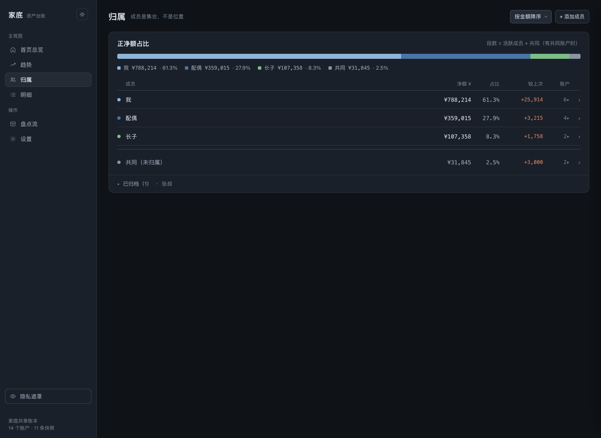
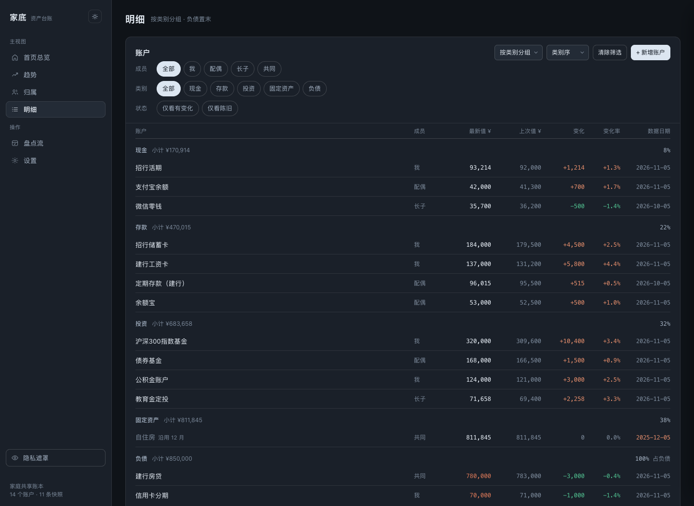
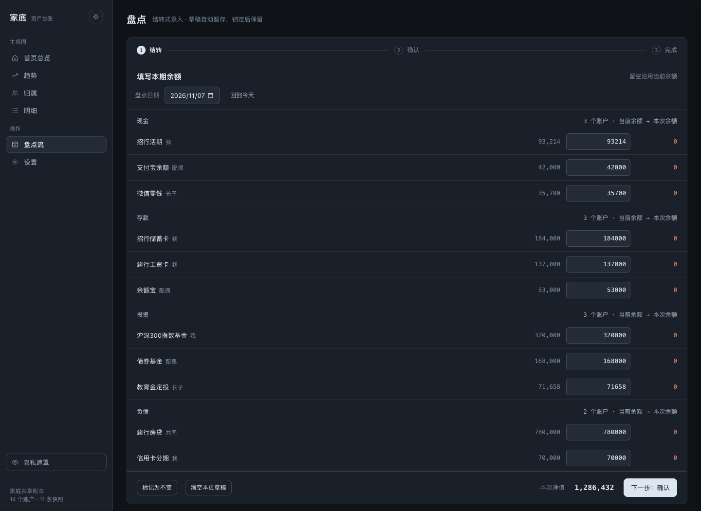
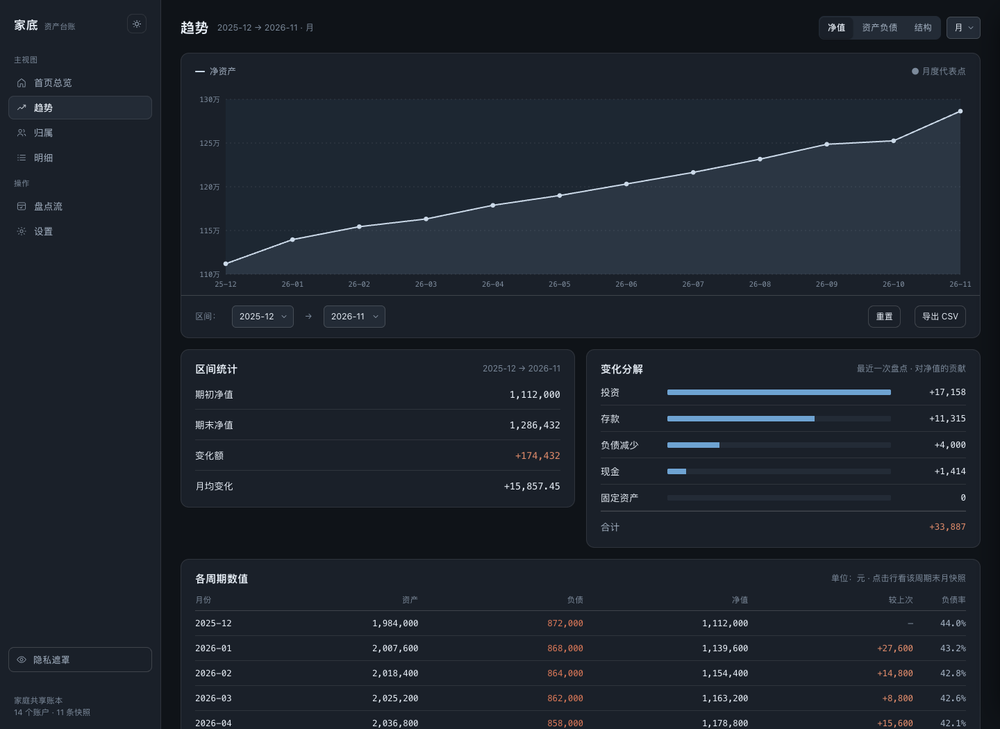
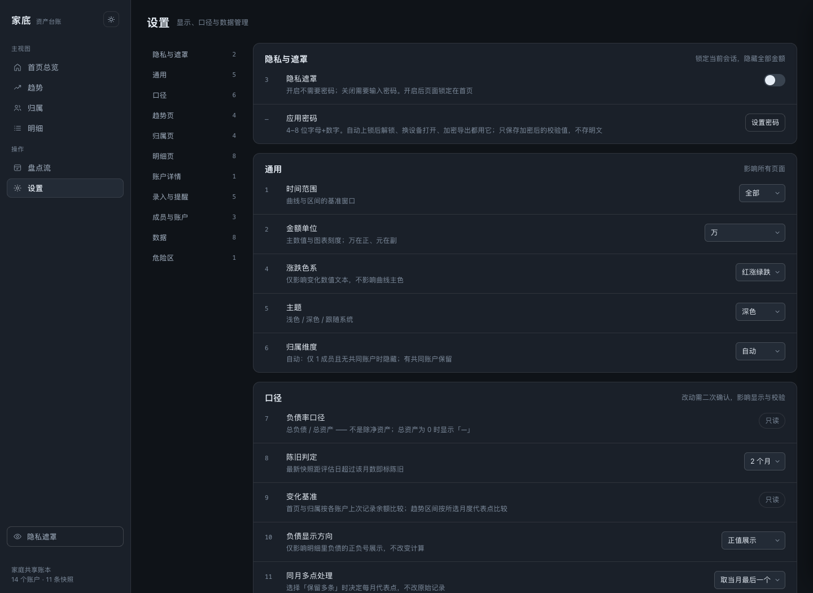
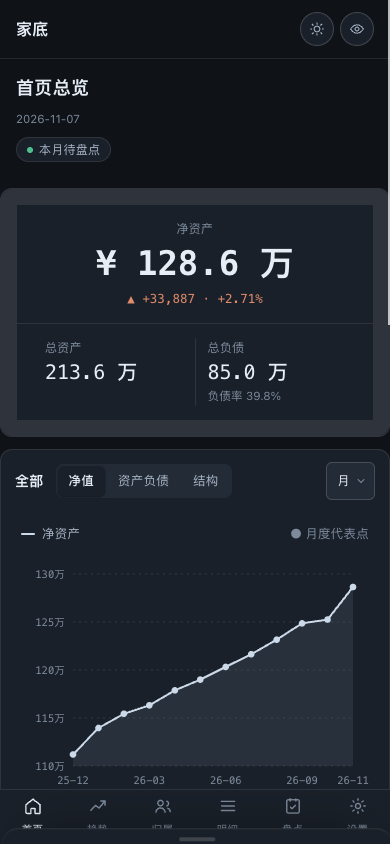

记账软件记流水，家底只盘点
一笔笔记流水，坚持不了三周；一个月盘一次余额，才真的会记满一年。家底把「记什么」这件事压到最小。
记账软件
- 每笔支出都要记，漏一笔就对不上
- 分类、预算、标签，先决条件越来越多
- 连银行、连账号，数据要出家门
- 月底看报表，还是不知道家里有多少钱
家底
- 只填余额：这个账户今天还剩多少
- 不分类每笔开销，只看结构占比的变化
- 不连银行、不连第三方，全本地存储
- 一行等式看完：总资产 − 总负债 = 净资产
七个视图，一眼看懂
没有花哨的动效，也没有滚动直播式的图表。深色与浅色都是同一套排版，手机上照着 390px 重排。






截图全部来自仓库内置的演示数据，不是任何人的真实账本。
该有的都有，不该有的不做
从 0.3 到 0.5，修的都是同一件事：账本不能坏、数据不能丢、界面不能骗人。
盘点即历史
每次填余额自动写进历史，趋势图按月或按年聚合成线，悬停看当月数值。
多端一份账本
电脑与手机访问同一服务。另一台已更新时，旧页面保存会被拒绝，不会互相覆盖。
密码门禁
进入账本、解开遮罩、导出备份共用一个应用密码；15 分钟无操作自动上锁，锁定态接口全部拒绝。
加密导出
JSON 备份、CSV、操作日志、HTML 报告都在服务端加密后下载，明文只能在自己这边还原。
写入不会半截
临时文件 + 同步落盘 + 原子替换，断电不会留下半个账本；同一个数据目录只允许一个进程写。
隐私遮罩
一键把金额换成圆点、图表虚化，在别人旁边也能打开看一眼。
三种装法，选一种
同一个服务不要重复启动多个进程指向不同数据目录。
1飞牛 NAS 微应用（推荐）
不占独立端口，走飞牛统一网关 /app/jiadi，用 NAS 统一登录。前置：应用中心已装 Node.js v22。到 Releases 下载 jiadi-<版本>-fnos-all.fpk，应用中心「手动安装」。
trim-cli --profile home --host <NAS> app install-fpk jiadi-<版本>-fnos-all.fpk \ --volume-id <卷ID> --custom-parameters '[]' --yes
已装旧端口版的，先在应用中心卸载（保留数据）再装新包。
2Docker Compose
任意常驻主机都可以，数据落在持久化卷 jiadi-data。
git clone https://github.com/Sunanang/jiadi.git cd jiadi docker compose up -d --build
3源码直接跑
只要 Node.js 22+，没有 node_modules，没有构建步骤。
git clone https://github.com/Sunanang/jiadi.git cd jiadi npm start # http://localhost:8080
首次访问设置账本密码；手机与其他电脑访问 http://<主机局域网 IP>:8080，用同一密码登录。
数据在你手里，也只有在你手里
没有账号、没有云同步、没有遥测。服务端唯一的账本文件是 data/ledger.json，密码只保存加盐哈希。
| 项 | 约定 |
|---|---|
| 存储位置 | 源码/Docker 默认项目下 data/；飞牛应用在应用数据目录 |
| 自动备份 | 没有。请自行每月导出一次加密备份，存在服务之外 |
| 浏览器里 | 只存主题、显示偏好、备份提醒日期与引导状态，账本不进 localStorage |
| 导出加密 | AES-256-GCM 信封，明文只能在「导入 / 解密」里还原 |
| 远程访问 | 请用 HTTPS 反向代理或私有网络入口（WireGuard / Tailscale），不要公网裸 HTTP |
常见问题
问得最多的几件事，一次说清。
它和记账软件到底差在哪？
记账软件记「钱怎么花掉」，家底记「钱还剩多少」。你只在一个月里挑一天，把每个账户的余额填一遍；家底负责把它变成趋势、结构和按人归属。没有流水要补，也没有分类要纠结。
需要连银行吗？数据会上传吗？
不连。不接任何银行、券商或第三方接口，也不会把账本发到任何服务器。所有数据就在你自己那台机器上的一个 ledger.json 里。
手机能用吗？
能。手机和电脑访问同一个服务、同一份账本，390px 宽度有专门的布局；飞牛用户可以登录飞牛客户端后从桌面进入，不必记端口。
忘记密码怎么办？
账本密码不可找回。旧加密备份仍可用导出时的密码解开，请按备份恢复，而不是删账本文件。
要备份吗？
要，而且只能靠你自己。家底不做自动备份，也不留云端副本。建议每月导出一次加密 JSON，放在服务之外的网盘或移动硬盘里。
可以在公网访问吗？
本项目按家庭内网设计，不建议公网裸 HTTP 暴露。需要远程时用 HTTPS 反向代理或私有网络（WireGuard / Tailscale），并保持应用密码开启。